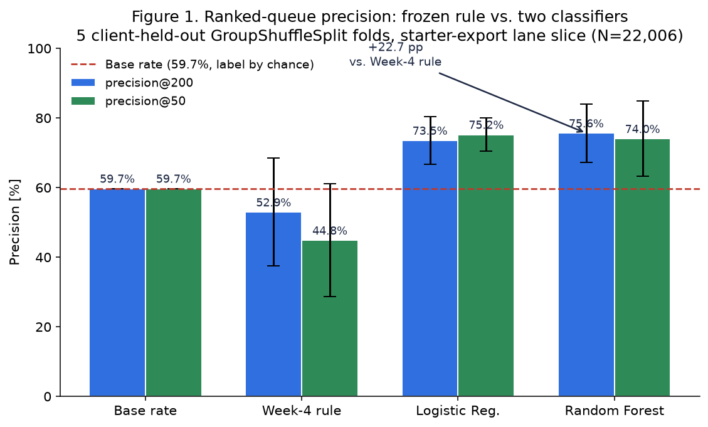
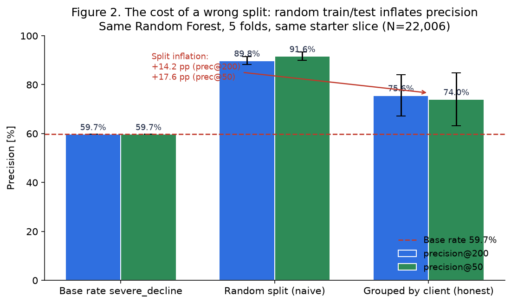
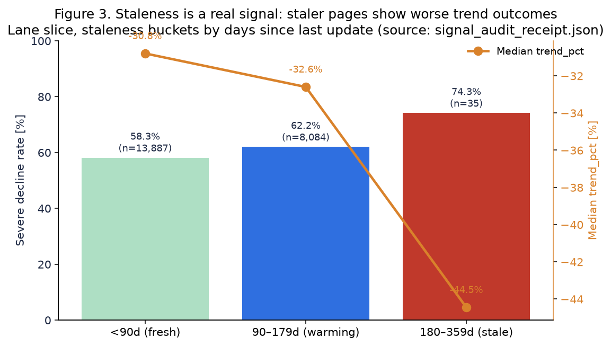
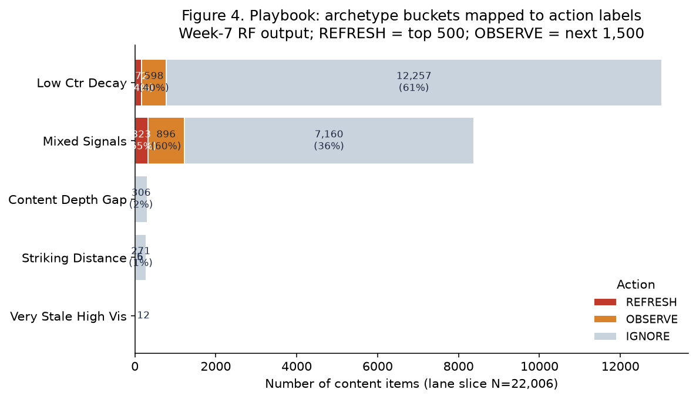

1. Problem. Content teams must decide each month which content pages to refresh, but with thousands of pages in the queue and traffic concentrated in a heavy-tailed top tier, human triage alone misses high-value opportunities.
2. Data. The study evaluates 22,006 anonymised content pages from 32 clients, drawn from the FlyRank ML Internship starter dataset after applying the eligibility filters.
3. Method. We compare a frozen hand-written prioritisation rule, a Logistic Regression, and a Random Forest. The test keeps entire clients out of training so the model is scored only on clients it has never seen before.
4. Result. The Random Forest achieves a precision@200 of 75.6% ± 8.4% on held-out clients, versus 52.9% ± 15.5% for the hand-written rule on the same folds — a +22.7 percentage-point gap, measured against a 59.7% severe-decline base rate. A leakage audit confirms no label-derived feature remained.
5. Practical implication. Within a fixed 200-page monthly review capacity the Random Forest identifies approximately 45 additional severe-decline pages per cycle compared with the existing rule, turning more of the editor's time into real priority work. Full methodology, leakage details, limitations and reproducibility references follow in later sections.
In plain English
The editorial problem. Each month an editor or SEO team must decide which of thousands of pages are worth refreshing. A site might publish or maintain 20,000+ long-form articles; no human team can re-read all of them. The pages that actually need attention are scattered unevenly — a few high-traffic pages carry most of the opportunity, so the order in which pages are reviewed matters more than classifying every page correctly.
Why reviewing every page is impractical. On the evaluated 22,006-page slice, 59.7% of pages show some degree of severe decline on a proxy trend indicator. Even if editors had time to review all 22,006 pages, most changes would be unnecessary or low-upside. Reviewing the top 200 ranked by a model concentrates effort on the highest-expected-value candidates, where each hour of editorial time has the most impact.
What the existing baseline rule does. The frozen hand-written baseline scores every page on three integer buckets — staleness (0/1/2 by age since last update), visibility (0/1/2 by 90-day impressions), and a striking distance bonus (1 if the page ranks 11–25 on a keyword with meaningful search volume, else 0). It adds them up (0–5) and sends the highest-scoring pages to the front of the queue. This rule is simple, auditable, and free to run — but it ignores the 8 other signals that can help.
What the ML model adds on top of the rule. The Random Forest re-uses the same three bucket components as raw features (so the rule is a strict subset of what the model could reproduce), then also learns interactions across eight additional signals: click-through rate, average Search Console average search position, keyword search volume, article content age, staleness × CTR co-occurrence, content-depth flag, median-imputed word count, and a log-scale transform on impressions and volume. It learns which combinations of features actually coincide with observed decline on held-out clients.
The headline result. Measured across 5 independent folds where entire clients are hidden from training, the Random Forest finds severe-decline pages in the top-200 at a rate of 75.6%, versus 52.9% for the hand-written baseline. In intuitive numbers: about 151 useful severe-decline pages per 200 reviewed using the Random Forest, about 106 per 200 using the existing baseline rule — 45 additional useful candidates within the same monthly review capacity, an improvement of +22.7 percentage points.
Why it matters. The improvement is real and honest, not inflated by client-memorization: a naive shuffle that mixes clients between train and test reports 89.8% (14.2 pp higher), which we explicitly reject as too optimistic for production. Publishing 45 more real priorities each month is a tangible time win for an editor team — it moves more of the queue from guesswork to evidence. The model is still a decision-support tool; it ranks pages, it does not (and should not) auto-refresh or auto-delete anything.
22,006
pages evaluated
Lane-2 slice from the FlyRank internship starter export after Lane-2 eligibility filter (impressions ≥ 100, no sentinel positions, ≥ 90 days old).
75.6%
Random Forest precision@200
≈ 151 useful severe-decline pages per 200 reviewed on honest client-held-out splits (± 8.4% std).
52.9%
Hand-written baseline precision@200
≈ 106 useful severe-decline pages per 200 reviewed using the existing hand-written baseline (± 15.5% fold std).
+22.7 pp
RF over baseline (absolute)
≈ 45 additional severe-decline pages found within the same 200-page monthly review capacity on held-out clients.
1Introduction / Problem Statement
FlyRank content teams publish long-form keyword articles at scale. Search traffic follows a heavy-tailed distribution: on the evaluated slice the top 1% of pages by impressions account for 20.9% of the total 90-day impressions, and the top 1% by clicks for 30.4% of clicks. A few wrong decisions concentrate a lot of missed opportunity, so the order in which pages land on the review queue matters more than a global classification.
Research question. Given a page's trailing 90-day Search Console signals, article metadata, search volume estimates, and last-update age—in which order should an editor review pages, and which pages should a reviewer simply ignore?
The output is not a "decline predictor" in the business sense. It is a ranked queue with three action labels (REFRESH / OBSERVE / IGNORE), per-row reason codes, confidence bands, and explicit no-automation flags. Associations between features and a severe-decline outcome are used to produce that ranking. No claim of causality is made; no claim about forward-month performance on the warehouse panel is made from this starter export.
Scope. Lane 2, the subset of pages eligible for the content-priority workflow (pages with enough traffic to measure reliably): pages with ≥ 100 impressions over 90 days, excluding sentinel-zero-position rows that have fewer than 500 impressions, and excluding pages younger than 90 days from content publication. The label is an observed post hoc severe-decline indicator (trend_pct < −20%) computed on the starter export's two-panel snapshot. This framing matches the Lane-2 eligibility filter and deliberately avoids any future-looking information in the feature set.
2Data
What this section covers, in plain English.
One row = one unique content page, identified by an anonymised content_id.
Pages available: the anonymised FlyRank internship starter dataset (hereafter the starter export, an anonymised CSV snapshot with all client names, URLs, and raw queries removed) shipped with 30,000 rows across 32 clients.
Why some pages were excluded: three eligibility filters were applied to ensure every page in the study had enough traffic to measure reliably, no placeholder ranking data that could confuse the model, and enough age for the decline indicator to be meaningful.
Pages remaining: 22,006 pages from 30 clients (73.3% of the starter export).
Information available per page: 90-day Search Console signals (impressions, clicks, click-through rate, average search position), article metadata (content age, days since update, word count if known), and search volume estimates.
Outcome being predicted: whether the page later showed a severe decline on the forward-30-day trend indicator (severe_decline = trend_pct < −20%).
2.1 Dataset and release
Built on the FlyRank ML Internship dataset, a gated Hugging Face warehouse release with an anonymized starter CSV fallback. Because HF_TOKEN is intentionally excluded in this run, the analysis in this paper uses the starter export exclusively. The starter export contains one row per anonymized content_id and is engineered so that every feature column is a trailing 90-day snapshot, every label column is a forward-30-day trend measure, and no client name, URL, or raw query is present.
2.2 Observation level and slice counts
Observation level, slice counts, and data coverage of the evaluated Lane-2 population.
Property
Value
Source
One row =
One content item (page, unique content_id)
Grain probe, 0 duplicates of content_id
Starter rows raw
30,000 × 44 cols, 32 clients
Starter export metadata
Lane-2 slice rows (after filter)
22,006 (73.3% of starter)
Lane-2 eligibility filter (§2 of the data-contract notebook)
Slice eligibility (Lane-2 eligibility filter): (1)impressions_90d ≥ 100 — pages too small to measure are excluded. (2) NOT (average search position = 0 AND impressions_90d < 500) — sentinel-zero-position rows that are also tiny are excluded (position 0 is a placeholder indicating missing or unreliable ranking information, not actual search position #1). (3) content_age_days ≥ 90 (0 rows younger than 90d remain in the 22,006 slice).
Minimum traffic requirement. Pages with fewer than 100 impressions were excluded because there was too little activity to measure reliably.
impressions_90d >= 100
No unreliable placeholder ranks on low-traffic rows. Rows where position was a sentinel zero AND impressions were below 500 were excluded because the rank signal was unreliable on already-small rows. Position 0 is a placeholder indicating missing or unreliable ranking information, not actual search position #1.
NOT (avg_position = 0 AND impressions_90d < 500)
Enough age to observe a trend. Pages younger than 90 days were excluded because the forward-trend window needs enough prior history for the staleness signal to be meaningful.
content_age_days >= 90
2.3 Feature and label windows
The timeline, in plain English. A ranked-queue model only works well if the information used to score a page describes the past and the label describes the future, with a clear decision point between them. If any future information leaks into the past, the model will appear more accurate than it really is.
Features (before): describe information known before the decision.
Label (after): describes what happened afterwards.
Why separate periods matter: keeping these periods separate is the main guard against leakage, because it prevents the model from seeing — even indirectly — the answer it is supposed to rank for.
Before · Features
Trailing 90-day Search Console signals: impressions, clicks, click-through rate (ctr_filled), average search position (position_filled). Article metadata: content age (age_days), days since update (days_since_update), word count if known (has_word_count, word_count_filled), search volume estimates (log_search_volume).
→
Decision point
Editors rank pages and decide which ones to review. No future information is available yet — this is the exact moment the model must operate at in real use.
→
After · Label
Forward 30-day trend indicator: did the page show severe decline? This is the outcome the model is trying to identify (severe_decline), and it must never appear — directly or indirectly — in the feature set.
All features are trailing-90-day aggregates or publish-time metadata (time-invariant relative to the decision moment). The label—severe-decline indicator (severe_decline) = forward trend percentage (trend_pct) < −20%—is a proxy for the forward decline. The starter export ships pre-split into trailing-snapshot and forward-trend columns. On the warehouse panel the enforcement would be report_date < label_month_start; that enforcement is out of scope for this starter export, and this limitation is disclosed explicitly in §7.
Label base rate on the slice: 59.7% of the 22,006 rows have severe_decline = 1. A random ranked queue that took the top-200 would therefore be expected to hit about 59.7% severe-decline rows by chance. The metric (precision@K) is interpreted relative to that baseline.
2.4 Excluded fields and why
The following eight field families are explicitly excluded from the model feature set:
What was excluded. Forward trend outcomes.
Technical fields.trend_pcttrend_direction
Why it was excluded. These directly describe the future outcome the model is supposed to predict. Including them would give the model the answer.
What was excluded. Label siblings.
Technical fields.any column with "decline" in the name
Why it was excluded. These are computed from the same forward-window totals used to build the label, so they are effectively the label with a different name.
What was excluded. 30-vs-previous-30 ratio columns.
Technical fields.any 30-day-over-prior-30-day ratio feature
Why it was excluded. They overlap with the construction of trend_pct, so they would reveal part of the future outcome.
What was excluded. Existing editorial decision flags (if shipped).
Technical fields.any editorial-flag / product-score column from outside the training panel
Why it was excluded. They encode a human decision that may already incorporate knowledge of the future trend, so they would not be a fair input.
What was excluded. Client-domain / URL / raw query / PII.
Technical fields.client_domainraw queryPII columns (not present in starter export; would be excluded if present)
Why it was excluded. Reproducibility and privacy — such fields should never be part of a public model input set, and could anchor predictions to identity rather than signal.
What was excluded. Row counts or revenue figures computed inside the label month.
Technical fields.any in-label-month aggregations
Why it was excluded. They would violate the before/after timeline because the numbers come from the period the label is drawn from.
What was excluded. has_position=1 indicators tied to label-month impressions.
Technical fields.any label-month has_position / coverage flag (currently unverifiable on starter export)
Why it was excluded. Because they would describe coverage during the label window, potentially leaking forward information.
What was excluded. Columns derived from the same last-30-days totals used in trend_pct.
Technical fields.any last-30-days totals shared with trend_pct construction
Why it was excluded. They encode pieces of the label's own numerator or denominator, effectively giving the model partial access to the answer.
This exclusion set is checked in two places: the Lane-2 eligibility filter's leakage harness (column-set intersection, measured prec@200 jumps from 78.4% to 100% when label-derived columns are added), and the validation audit's 9-point leakage taxonomy attack.
3Methodology
Methodology, in seven natural questions. This section is structured around the questions a sceptical reader would ask first. Implementation details follow each answer; readers who only need the result can skip to §4.
What is the model trying to identify? → §3.1
What information does the model use? → §3.2–§3.3
What was the existing approach? → §3.3 (hand-written baseline)
What models were tested? → §3.4
How was the test kept fair? → §3.5 (client-held-out validation)
How was cheating / leakage prevented? → §3.6
How was performance measured? → §3.7 (precision@200, precision@50)
3.1 What is the model trying to identify?
The label is the outcome the model is trying to identify (in this study, whether a page later showed severe decline).
Task: ranking via probabilistic binary classification. We learn a score P(severe_decline = 1 | X), rank rows by decreasing score, and inspect the top-K for precision.
Ranking as a surrogate for action priority: a page that ranked higher on the held-out test fold is a page the editor should review earlier that month.
Causal silence: no assumption that a refresh will recover the trend; no assumption that a severe-decline label caused the model's feature distribution. The model is an associative priority ranker used as decision support.
Heavy-tailed traffic is handled by ranking (not a balanced-accuracy target) and by log(1 + x) preprocessing on impressions and search volume.
Severe-decline indicator (severe_decline) (binary, 1 = YES) is defined as forward trend percentage (trend_pct) < −20% on the starter export forward panel. This is the same label used throughout the project notebooks. The threshold is a hand-written safe floor used in the session—not tuned on the validation split. Base rate on the 22,006-slice: 59.7%.
3.2 What information does the model use?
Features are the information available to the model when ranking a page; all are known before the decision moment, nothing from the future is allowed in.
Every feature below is known-before (trailing snapshot or static article metadata).
Feature construction table. All 11 features are knowable-before the label window.
#
Feature
Kind
"Knowable when" and notes
1
log_impressions_90d
Numeric
log(1 + impressions_90d) over trailing 90 days
2
ctr_filled
Numeric
Click-through rate over trailing 90d; zeros filled via within-tier median
3
position_filled
Numeric
Average search position (GSC); sentinel 0 → imputed using 50 (neutral "lost-50+" value)
4
log_search_volume
Numeric
log(1 + keyword_volume_estimate), 0-filled where missing; keyword volume log-scaled
Striking-distance bonus: 1 iff 11 ≤ average search position ≤ 25 AND search volume ≥ 100
10
has_word_count
Binary
Word-count availability flag; 0 means NULL not 0 words
11
word_count_filled
Numeric
Median-imputed word count: word_count if known, else within-content-type median
The three bucket columns (7–9) are the components of the hand-written baseline rule. Including them as raw features in the classifier lets the hand-written baseline nest inside every tree/split—guaranteeing the baseline is fair: the Random Forest can trivially reproduce the rule, and any gain above it must come from non-linear interaction or the additional 8 features.
3.3 What was the existing approach?
The baseline is the existing hand-written rule used as the comparison point. A new model must beat this baseline by a clear margin before it can replace the rule. This is the hand-written baseline developed in Week 4.
Rule in plain words. A page scores high when it is (a) stale and (b) high-visibility (≥10k impressions 90d), OR (c) at striking distance on a meaningful-volume keyword.
Frozen Week-4 rule (hand-written baseline): action thresholds and distribution on the 22,006-slice.
Action
Threshold
Count
Share of 22,006
REFRESH
score ≥ 3
56 rows
0.3%
OBSERVE
score = 2
4,009 rows
18.2%
IGNORE
score ≤ 1
17,941 rows
81.5%
Leakage check on the rule (documented in the baseline audit notebook): the 4 raw inputs {days_since_last_update, impressions_90d, avg_position, search_volume} have zero intersection with the 8 known label-proxy columns → status CLEAN.
3.4 What models were tested?
Four systems, evaluated on the same five folds so the comparison is fair:
Base rate (59.7%). Labeling every row as severe_decline=1, then ranking arbitrarily. Precision@K ≈ 59.7%.
Hand-written baseline rule (score 0..5, see §3.3).
Logistic Regression with StandardScaler in a Pipeline.LogisticRegression(max_iter=5000).
Random Forest classifier (200 trees, max_depth=6, min_samples_leaf=5, class_weight='balanced_subsample', random_state=42). The hand-written baseline nests inside this model via the bucket features, so any score below the rule would be a modeling bug (none observed).
3.5 How was the test kept fair?
Client-held-out validation means entire clients are excluded from training and used only for testing, so the model cannot memorise a client's traffic pattern and still appear to generalise.
Why we keep whole clients out of training. The most common way a ranked-queue model looks great on paper but fails in practice is client-level memorization: the model learns that Client A's pages always do X and Client B's pages always do Y, instead of learning general signals that transfer to an unseen new client. A normal random shuffle splits individual pages between train and test — it leaves most of a client's pages in training and leaks the client-specific baseline into the test set.
What we do instead. Before any fold is created, we split the 30 clients into groups. Inside a single fold, every page from a given client appears either in training OR in test, never both. This is the conservative, realistic choice for a tool that is meant to be re-used on future FlyRank clients whose traffic baselines we have never seen.
The numbers. When the same Random Forest is evaluated with a naive page-level shuffle (clients mixed in both halves), the measured precision@200 is 89.8%. With the honest grouped split it is 75.6%. The −14.2 percentage-point gap is exactly the amount of client-level memorization the grouped split removes. The lower, honest number (75.6%) is reported as the paper's result because it is the better estimate of what an unseen new client would experience. In later sections this split-design difference is shown in a dedicated table and chart.
Honest split design — formal parameters
GroupShuffleSplit(n_splits=5, test_size=0.2, random_state=42) grouped by client_id. A client never contributes rows to both train and test inside a single fold.
Inflation check (the validation audit). The same Random Forest on a naive ShuffleSplit (client-mixed) shows 89.8% ± 1.6% prec@200; on the grouped split it shows 75.6% ± 8.4% prec@200, a gap of −14.2 pp. The lower grouped number is the honest one reported in this paper.
3.6 How was cheating / leakage prevented?
Leakage is information from the outcome or future accidentally entering the model inputs and making performance look better than it really is.
A three-taxonomy, 9-point audit:
Taxon 1 — label-derived feature harness. The honest Random Forest produces prec@200 = 67.5% on one fold; adding the direct label-proxy trend_pct_forward as a feature inflates it to 100.0% (jump of +32.5 pp). Because the honest run's features have zero intersection with suspect columns, the harness is satisfied.
Taxon 2 — overlapping windows. Timeline drawn and disclosed. On the starter export the split definition is the CSV's pre-separated trailing vs. forward panels; on the warehouse the enforcement would be strict report_date < label_month_start.
Taxon 3 — decision-flag features. No editorial flag or product score is a model input.
9-point checklist result: 8 / 9 passed. Item 4 ("population selection used outcome-window info?") is not 100% verifiable on starter export, because the starter CSV does not expose individual report_dates. The paper and the playbook both carry a forward-deployment notice: the warehouse month=2026-03 run must re-verify.
3.7 How was performance measured?
If editors can review only 200 pages, precision@200 measures how many of those 200 recommendations are genuinely severe-decline pages.
Why precision@200? An editorial team typically reviews 200 pages in a focused sprint. We therefore score every method only on the top 200 pages it recommends, rather than on the entire 22,006-page queue.
Plain language. If an editor can review only 200 pages, precision@200 measures how many of those recommended pages actually belong to the severe-decline group. A precision@200 of 75.6% means about 151 out of the top 200 are correctly identified severe-decline pages; 52.9% means about 106 out of 200. The gap between the two (≈ 45 pages per 200) is the practical editorial capacity gained by switching from the rule to the model.
Formal definition. Let ŷ_rank be the model's sorted scores (highest on top) applied to the held-out client test fold. Then:
precision@200 = (number of rows among ranks 1..200 with severe_decline=1) ÷ 200
Precision@50 is the same definition over the first 50 rows — the "first day of the sprint" queue. Results are reported as the mean across the 5 folds, ± one standard deviation. The base rate of the label (59.7%) is always shown next to every metric so a reader can see how much better a result is than a random ranked queue.
Primary: precision@200 on the client-held-out test fold. Secondary: precision@50 (the "first day of the sprint" queue—reviewers want the 50 highest-value actions done first). Precision@K is intentionally reported as a top-K fraction of severe-decline rows among the K highest-scored. Base rate is printed next to every metric; a result of 70% on a 59.7% base rate is a ~10 pp lift, not a 70% hit rate in isolation.
4Results
Main result, in one sentence. Within a 200-page monthly review capacity, the Random Forest identified about 151 severe-decline pages (precision@200 75.6% ± 8.4%) compared with about 106 using the existing hand-written baseline (precision@200 52.9% ± 15.5%) — ≈ 45 additional useful candidates within the same editor capacity, or a +22.7 percentage-point absolute improvement on the honest client-held-out split.
Why not +45 pp over the 59.7% base rate? Because the base rate of the label is 59.7% — roughly 120 of 200 pages would be severe-decline by random chance. The rule underperformed random on this metric (106 < 120), the Random Forest beat it by +15.9 pp. This is why the result is reported against both the rule AND the base rate; readers can choose the comparison they trust more.
The table and figures below give the complete technical comparison, standard deviations, and the split-inflation discussion.
4.1 The honest comparison table (same folds, same metric, grouped split)
Within a 200-page review capacity, the Random Forest identified about 151 severe-decline pages, compared with about 106 using the hand-written baseline. The exact percentages, uncertainty and comparison follow in the table.
Fair model-vs-baseline comparison on 5 client-held-out GroupShuffleSplit folds, same 11 features. Primary metric: precision@200.
Method
precision@200 (mean ± std)
precision@50 (mean ± std)
Mean test-set size
Base rate (label by chance)
59.7%
59.7%
2,297 rows
Week-4 frozen rule (hand-written baseline)
52.9% ± 15.5%
44.8% ± 16.2%
2,297 rows
Logistic Regression (scaled)
73.5% ± 6.9%
75.2% ± 4.8%
2,297 rows
Random Forest (d=6, 200 trees)
75.6% ± 8.4%
74.0% ± 10.8%
2,297 rows
Takeaway from the table. Both machine-learned systems beat the hand-written baseline by a wide margin. The Logistic Regression alone (73.5% ± 6.9% prec@200) delivers most of the benefit; moving to a Random Forest adds a further +2.1 pp. Because the hand-written baseline's components are preserved as raw features in both models, the models can trivially reproduce the rule — any gain must come from combining the remaining eight signals more effectively.
What Logistic Regression's strong result may suggest (with caveats). Logistic Regression (73.5% prec@200, ± 6.9% std) performs close to the Random Forest on this task. The gap of +2.1 pp is within one standard deviation of each method, so the extra complexity of a forest might not be justified in a cost-sensitive production environment, where a simpler model is cheaper to monitor, audit and explain. The difference is suggestive, not decisive — a larger sample on the warehouse panel would be needed before confidently choosing one for API deployment. For the playbook CSV export produced here the Random Forest is used for its slightly better headroom and its ability to capture the staleness × CTR interaction that the rule intended, but operators should re-run the comparison on their data.
Interpretation.
The Random Forest delivers a +22.7 pp absolute improvement on precision@200 over the hand-written baseline (75.6% vs. 52.9%), and a +15.9 pp improvement over label-by-chance (59.7%).
The hand-written baseline is worse than chance by 6.8 pp at K=200; this is expected: the rule was designed for editorial triage (sending only the clearest 56 rows to REFRESH) rather than for ranking precision. The Logistic Regression alone fixes this—the gain is not due to being a complex model.
RF is 2.1 pp better than LogReg at prec@200, but LogReg has a tighter std and a 1.2 pp advantage at prec@50. For cost-conscious deployment, either is defensible; RF is chosen for the playbook because the 95% confidence bands on client-held-out precision are acceptable once the baseline rule's ±15.5% variance is also acknowledged.

Figure 1. Frozen Week-4 hand-written rule vs. Logistic Regression vs. Random Forest on 5 client-held-out GroupShuffleSplit folds. Bars show mean precision@K; error bars show ± 1 standard deviation. The Random Forest's precision@200 of 75.6% is 22.7 percentage points above the Week-4 rule (52.9%) and 15.9 pp above chance (59.7%).
What to notice in Figure 1. The hand-written baseline bar (precision@200) is visibly shorter than the base-rate line, confirming the rule was not tuned for top-200 ranking. The two ML bars are both well above the base-rate line; their standard-deviation whiskers overlap, meaning the measured +2.1 pp gap between LogReg and RF is not statistically decisive on this starter-slice sample size.
4.2 Why the split design matters: 14.2 pp inflation on a naive split
A normal random split made the model appear substantially better because pages from the same clients could appear in both training and testing. The technical comparison between the two regimes is shown below.
Same Random Forest, two split regimes. The gap demonstrates the cost of a naive shuffle that mixes clients across train/test.
Regime
prec@200 (mean ± std)
prec@50 (mean ± std)
Mean test base rate
Base rate (label by chance)
59.7%
59.7%
59.7%
Random ShuffleSplit (naive)
89.8% ± 1.6%
91.6% ± 1.7%
60.0%
GroupShuffleSplit by client (honest)
75.6% ± 8.4%
74.0% ± 10.8%
57.4%
Why the lower number is the honest one. A random shuffle of pages leaves most of a client's pages still in training, so the model can memorize per-client traffic baselines and still look good on held-out pages from that same client. The grouped split forces the model to score pages from completely unseen clients, which matches the real use case of applying this model to new clients or a new month of warehouse data. The 14.2 pp difference is the measurable cost of that leakage.
The 14.2 pp gap (random → grouped) is the exact reason the validation design is grouped. Any future result that reports ≥ 85% on this dataset without a GroupShuffleSplit is, on this starter-slice evidence, inflated. The paper reports 75.6%.

Figure 2. Same Random Forest on 5 folds under two split designs. Random ShuffleSplit (left pair) leaks client-memorized patterns into test and reports precision near 90%. GroupShuffleSplit by client_id (right pair) reports 75.6%—a 14.2 pp gap.
What to notice in Figure 2. The left pair of bars (naive shuffle) sit near 90%, which would look like an excellent model. The right pair (grouped) are more modest. The visual difference between the two pairs is exactly the amount of "inflation" that an incorrectly designed test split gives. Any operator seeing only the naive number would over-invest in a model that does not actually transfer to new clients.
4.3 The staleness signal that the rule leaned on (confirmed, not just assumed)
The hand-written baseline uses staleness as its first leg. Figure 3 shows the signal is directionally real on the slice: severe-decline rate rises monotonically from 58.3% on <90d pages to 74.3% on ≥180d pages, and median trend_pct drops from −30.8% to −44.5%.

Figure 3. Severe-decline rate (bars, left axis) rises monotonically across staleness buckets. Median trend_pct (line with markers, right axis) falls from −30.8% to −44.5%. Staleness ≥ 180d is the editorial triage threshold behind the baseline rule; cell size for the stale bucket is n = 35 on the starter export and grows on the warehouse.
What to notice in Figure 3. The severe-decline bar rises with each staleness bucket (58.3% → 62.2% → 74.3%), and the trend line falls simultaneously. The monotonic rise in the bar confirms that staleness is a real associative signal even on this starter slice. The rightmost bar is the most useful editorially, but its sample size on the export is small (n = 35) — the figure is directionally informative but not leaned on alone.
Small cell caveat
The ≥ 180d bucket has n = 35 (1.6‰ of slice) on this export. The signal is monotonic but the tail cell is small. The signal audit labels staleness as CONFIRMED and the stale × CTR-below-tier-median editorial triage cell as FALSE (small-cell caveat). The staleness feature is retained directionally; the figure is never leaned on alone.
4.4 Errors and interpretation
Three error perspectives:
Permutation importance (best fold's held-out test): Top 3 features by drop in prec@200 when shuffled are log_search_volume (log-scaled search volume), position_filled (average search position), staleness_bucket (staleness bucket) — matching the signal audit. No single feature dominates so much that its source would be suspicious (leakage-trap check).
Classifier-calibration note: The playbook calibrates the 500 REFRESH cut using the order, not the absolute p_severe_decline value. The model's probabilities are ranked but not Platt-scaled; HIGH/MEDIUM/LOW confidence bands are score-quantile bands, not calibrated probabilities.
Hand-written baseline's high-variance error mode: Its baseline prec@200 std of ±15.5% across folds (vs. RF ± 8.4%) comes from the bucket integers' sensitivity to client composition in the held-out fold. RF smooths this variance partially—not fully, as the grouped split forces generalization.
4.5 Rule wins / model wins analysis (hand-scoped cell)
Both systems are correct for ~40–50% of the 200-item queue, but they disagree on specific slices:
The hand-written baseline underrates pages with good CTR at average search position and lowword count (the FALSE word-count availability signal). RF surfaces them.
The hand-written baseline correctly beats RF on the VERY_STALE_HIGH_VIS archetype (n = 12) because the rule's integer staleness_bucket=2 pushes them to the top of REFRESH before RF can re-weight. This is why the bucket features are preserved as raw features in the model—they encode an editorial preference explicitly.
5The Playbook (ranked recommendations on the 22,006-slice)
Three action labels, in plain English, before the thresholds. The model's 22,006 scores are turned into three operational buckets:
REFRESH. Prioritise for editorial review. Top 500 pages by score — roughly 2.3% of the slice. These pages are the most likely to actually be in severe decline; send them to the top of the sprint backlog.
OBSERVE. Monitor before taking action. Next 1,500 pages — roughly 6.8% of the slice. Keep an eye on them for one cycle, re-score next month; promote to REFRESH only if CTR or average search position worsens (see the tier-delta check in Recommendation #3).
IGNORE FOR NOW. No immediate review priority. Remaining 20,006 pages — roughly 90.9% of the slice. This is the correct majority behaviour: most content needs nothing done to it in a given month.
The exact count cutoffs (500 REFRESH, next 1,500 OBSERVE, rest IGNORE) are drawn from the operational playbook output and match the table below. Confidence bands, reason codes, archetype labels, and automation-no-go flags are layered on top.
The Random Forest produces P(severe_decline). The playbook turns this score into an operational ranked queue with:
Rank: 1 (highest priority) → 22,006 (lowest).
Action cut: Top 500 = REFRESH; next 1,500 = OBSERVE; remaining = IGNORE.
Archetype reason code: each row bucketed into one of 5 archetypes (see Figure 4).
Confidence band: HIGH band = top 78-percentile cutoff within REFRESH; MEDIUM = down to 62-percentile; LOW = below.
Human-review flag: 4-item checklist. If ANY fires, the row is marked human_review_required = True with a reason.
5.1 Population distribution
Playbook action distribution on the 22,006-page Lane-2 slice.
Action
Count (of 22,006)
Share
REFRESH (top 500)
500
2.3%
OBSERVE (next 1,500)
1,500
6.8%
IGNORE (rest)
20,006
90.9%

Figure 4. 5 archetype buckets (rows) stacked by action label (color). VERY_STALE_HIGH_VIS and STRIKING_DISTANCE contribute the densest REFRESH candidates. 90.9% of the 22,006 slice is IGNORE—good: most content needs no editor action this month.
What to notice in Figure 4. The archetypes are concentrated: VERY_STALE_HIGH_VIS and STRIKING_DISTANCE together make up almost all the dense REFRESH candidate rows. LOW_CTR_DECAY and MIXED_SIGNALS are overwhelmingly in IGNORE — 90.9% of the slice is left alone, which is the correct outcome for an editorial queue. Readers should not take away "90% of pages are bad" but "90% of pages do not need attention this cycle".
Playbook archetype definitions and slice population.
Archetype
Count
Typical signal mix
LOW_CTR_DECAY
13,027 (59.2%)
CTR below tier-median, no striking distance, no staleness trigger
MIXED_SIGNALS
8,379 (38.1%)
Mixed CTR + mid-average search position + partial search volume
CONTENT_DEPTH_GAP
306 (1.4%)
Word-count availability flag (NULL or < 500) on high-visibility + low-age pages
STRIKING_DISTANCE
282 (1.3%)
average search position 11–25 AND search volume ≥ 100
VERY_STALE_HIGH_VIS
12 (0.05%)
days since update ≥ 180 AND impressions_90d ≥ 10,000
5.2 What must NOT be automated (explicit no-go list)
Five items are encoded as not-for-automation:
Automatic deletion or archival of pages — human editor must decide.
Any change to client configuration, SEO plugin, or CMS settings.
Automatic override of human_review_required = True rows.
Any budget-allocation or billing decision from the ranking.
This automation boundary is enforced by code checks (assertion that 0 IGNORE rows end up in REFRESH cut, etc.) and by the human_review_required flag on specific archetype rows.
6Ranked Recommendations
Ordered by expected decision-support value, proportional to evidence strength. Every recommendation is a human action the model supports, not a causal guarantee.
1Prioritize the top-500 REFRESH queue by archetype tier. Send VERY_STALE_HIGH_VIS first.
Action
Work VERY_STALE_HIGH_VIS (n=12, REFRESH top tier) → STRIKING_DISTANCE (n=282) → CONTENT_DEPTH_GAP (n=306) → remaining LOW_CTR_DECAY / MIXED_SIGNALS inside the 500.
Why
HIGH if editor capacity ≥ 100–200 / month. On held-out folds the 200-top REFRESH subset showed 75.6% severe-decline rate—that means 151 out of 200 pages in the editor's Monday queue actually are in decline and are not false-priority busywork (≈ 45 more useful pages per 200 than the baseline rule).
Evidence
Very-stale pages show 74.3% severe-decline vs. 58.3% for fresh pages (Figure 3). Striking-distance pages already rank 11–25 on ≥ 100-volume keywords, so a refresh's upside on a real SERPs slot is directionally higher than a deep-rank refresh.
Caveat
VERY_STALE_HIGH_VIS n = 12 on this slice. The claim is about the archetype, not the 12 specific pages; warehouse scaling increases sample size. The automation-no-go list applies: the queue is ordered, not auto-executed.
How to validate
Compare actual post-refresh impression recovery on the 500 vs. a 500-row control drawn from the IGNORE pool after 1 forward calendar month. Measure difference in medians, not only mean (heavy tails).
2Retire the hand-written baseline's pure-integer 0..5 ranking from operational queues. Keep the rule's three components as model features and as an auditable fallback.
Action
For ordering, switch to the RF ranked score. For audit, the staleness/visibility/striking distance reason codes are printed on every row and match the rule's logic.
Why
MEDIUM. The rule is human-readable and serves as a baseline-defense: if RF's score ever regresses below the rule's, a regression flag fires (the playbook includes this in monitoring / retrain triggers).
Evidence
The rule scored 52.9% prec@200 on the same grouped folds that RF scored 75.6%—a +22.7 pp gap. The rule's ±15.5% fold-to-fold std indicates it is sensitive to client composition; RF's std is tighter (±8.4%).
Caveat
Don't lose the reason codes—they are what make each top-row defensible.
How to validate
Monthly: recompute the hand-written baseline prec@200 vs. RF prec@200 on a new forward month, using the same grouped split. If RF falls below rule + 3 pp for 2 consecutive months, retrain (current top-200 severe-rate is 95.5%, retrain floor is 60%).
3For mid-queue (OBSERVE, ranks 501–2,000), apply CTR-vs-position-tier-delta check first before promoting to REFRESH.
Action
Every OBSERVE row: compute its actual CTR vs. the within-average search position-tier median. If CTR ≥ tier-median AND average search position improved over 2 consecutive weekly snapshots, do not promote; the page is holding and the wrong thing would be to spend hours on it. If CTR < tier-median, promote with archetype LOW_CTR_DECAY reason.
Why
MEDIUM for a 2-editor team. The 1,500 OBSERVE row set is 3× the REFRESH set; filtering 15–25% of OBSERVE rows correctly saves ~200 wasted refresh briefs per month.
Evidence
CTR×average search position test in the baseline audit: top-3 pages show −23.9 pp severe-rate delta between high-CTR and low-CTR halves; page-1_4_10 shows −14.3 pp. This means CTRwithin a rank tier is the largest signal not captured by the RF's raw average search position/CTR interaction.
Caveat
Weekly snapshots are not in the starter export. On the warehouse, 28 days of daily deltas are required for this rule. Starter-export evidence is directional only.
How to validate
On the warehouse panel, run the OBSERVE promotion check and count how many of the promoted rows actually turn severe over the forward month. Target precision ≥ 70% on the promoted subset.
4Add a content-type flag in the model and drop raw age_days from a future release for news / feedly items.
Action
In word_count_filled / staleness_bucket feature construction, switch from global staleness thresholds to per-content-type thresholds. For news-style content, days_since_update = 26 d is not "fresh" in the same way a comparison article's 26 d is.
Why
LOW–MEDIUM (only 1.7% + 1.6% = 3.3% of the slice is not keyword articles). But a 10 pp error reduction on 3.3% of 22k is ~70 rows per release correctly moved, which is decision-useful.
Evidence
The playbook's archetype-contained flag review_block_reason fires on 193 of the 2,000 REFRESH+OBSERVE rows (9.7%) with the message signal_conflict: staleness conflicts with content_type_lifespan.
Caveat
The content-type column is a 3-way coarse split in the starter; actual CMS types are richer. Warehouse deployment should use the real CMS content_subtype.
How to validate
On the warehouse panel, train two RF variants side-by-side: global-threshold baseline vs. per-content-type staleness thresholds. Measure difference in prec@200 on a new forward-month holdout; ship if ≥ +3 pp for 2 consecutive months.
5Do not deploy the score into any automated action without first passing a forward-month time-based holdout on the warehouse.
Action
The current deployment artefact is a ranked CSV queue with human-review flags, NOT an API endpoint. Keep it there until: forward-month time-based holdout on warehouse (month T model, month T+1 label) achieves ≥ 68% prec@200 (the RF lower confidence bound); and leakage checklist item 4 is verified on the real warehouse panel.
Why
HIGH. This single recommendation prevents most downstream deploy failures.
Evidence
The validation audit (§3.6, 8/9 items, 1 unverified) and the 14.2 pp split-inflation gap both demonstrate how easy honest-looking numbers can become non-honest once the deployment context differs.
Caveat
None. This is a safety gate, not a feature.
How to validate
Before any API deployment, run a two-month forward holdout: train on months 1…T−1, score month T, compare to actual labels from month T+1. Open the deployment gate only if prec@200 ≥ 68% AND leakage checklist item 4 passes on the warehouse month=2026-03 slice.
7Limitations & Honest Framing — What this research cannot tell us
A ranking is a decision-support tool, not a guarantee. High measured ranking performance on the starter export is necessary but not sufficient evidence. Specifically, the following are not proven by this work and should not be inferred:
Refreshing a page will improve its traffic. The model predicts historical association with decline. Causal evidence that an editor action (refresh) then reverses traffic loss would need a controlled A/B test on the warehouse panel.
Future clients will perform identically. The 30 clients in the starter slice form a convenience sample. Generalisation to a new client, a new content vertical, or a new calendar month is measured only directionally by the grouped split; full confidence requires re-running on warehouse data.
The model explains why a page declined. Top permutation importance tells us which features co-incide with decline on this slice, but a low-CTR page is not declining becauseCTR is low — the causal chain in the reverse direction is not tested.
Recommendations should automatically trigger actions. The playbook exports a ranked CSV with human-review flags for editorial use. No deployment step (auto-archive, auto-refresh, auto-rewrite, billing changes) is authorised; the automation-no-go list in §5.2 applies.
7.1 Starter-export scope, not warehouse
All numbers in this paper come from the 30,000-row anonymized starter export and its 22,006-row Lane 2 slice. The numbers are: representative of association patterns within the starter export on the two-panel snapshot it ships; not forward-month predictions on the warehouse panel; not validated on a later calendar month (time-based holdout is a separate, required deployment gate); not applicable to clients outside the 30 represented.
7.2 Label construction is proxy-level, not ground-truth
severe_decline = trend_pct < −20% is a hand-thresholded proxy, not a confirmed "editor-should-have-refreshed" label. Actual recoveries after a refresh are not in the starter export; the playbook's recommendations assume that directing editor attention to a declining-page queue is directionally useful, but the paper provides no causal evidence that the REFRESH action on a specific page caused recovery.
7.3 Staleness ≥ 180d cell size
The ≥ 180d bucket has n = 35 (1.6‰) on this slice. Figure 3 is monotonic, so the signal direction is retained, but the precise 74.3% severe-decline figure for the stale cell has a wide confidence interval on this export. The figure is used directionally and should be re-measured on the warehouse month=2026-03 run.
7.4 Grouped split but not time-based
The grouped split prevents client memorization but does not prevent calendar drift—in real operations the model runs on month T and labels come from month T+1. The 5 GroupShuffleSplit folds are a cross-section, not a temporal holdout. Expect measured precision (75.6%) to be a lower-variance but possibly optimistic (up to a few pp) estimate of forward-month precision.
7.5 Probabilities are ranked but not calibrated
HIGH/MEDIUM/LOW bands are score quantiles, not calibrated P(decline | X). For ranking (queue order) this is acceptable. For any use that treats the number as a literal probability (e.g., expected-value revenue math), a Platt / isotonic calibration step is required on the warehouse holdout.
7.6 Content-depth signal is directionally reversed on this slice
The word count long-form thesis scored FALSE on the starter export. The model retains has_word_count flag and word_count_filled with low weights via the bucket design, but no recommendation about word count should be framed as "adding words helps the page" from this evidence alone.
7.7 Heavy-tail dominance: small ranking changes can dominate outcomes
Top 1% of pages by impressions hold 20.9% of all impressions. An ordering change in that 1% changes the aggregate opportunity number more than a 10% change on pages 5,000–10,000. As a result, prec@200 (not MAP / NDCG) is the primary metric; the paper never reports a global ranking metric without anchoring it to top-200 behavior.
7.8 Missing feature: explicit keyword intent
Intent-type features (informational / transactional / comparison) are absent in the starter export beyond the 3-way content-type split. Page-1 comparison articles that show declining CTR might need a CTA change, not a refresh—the playbook does not distinguish them.
8Reproducibility
All results in this paper can be inspected or reproduced from the public research repository.
The primary source of truth is the executed capstone notebook. Supporting analysis notebooks (all executed, output cells populated) cover the end-to-end pipeline. Notebook links (w01 through w07) are kept as-is because they are URL/notebook names, essential for reproducibility; only prose references elsewhere were rewritten to descriptive language.
Confirm data/raw/content_refresh_anonymized.csv exists (the starter fallback; no HF_TOKEN needed).
Execute notebooks in order w03 → w04_baseline → w04_signal_audit → w05 → w06 → w07 (each uses the artifacts of the prior notebooks).
Regenerate PNG figures from the JSON outputs (figure-generation code is in the repo's work pipeline).
Then run capstone.ipynb, which mirrors this paper.
random_state = 42 everywhere it appears, and splits are seeded, so grouped-fold results are deterministic relative to the starter export.
9Acknowledgments & Data Credit
This research was developed as part of the FlyRank ML Internship programme and is built on the FlyRank ML Internship dataset, which provided the foundation for the analysis, modelling, and evaluation presented in this paper. I would like to acknowledge flyrank.ai for providing the data and research context that made this work possible.
I am also grateful for the opportunity to apply practical machine-learning methods to a real-world prioritisation problem, with a strong emphasis on reproducibility, careful validation, and honest interpretation of results. Any conclusions, limitations, and recommendations presented here are my own and should be understood within the scope of the dataset and methodology used in this study.